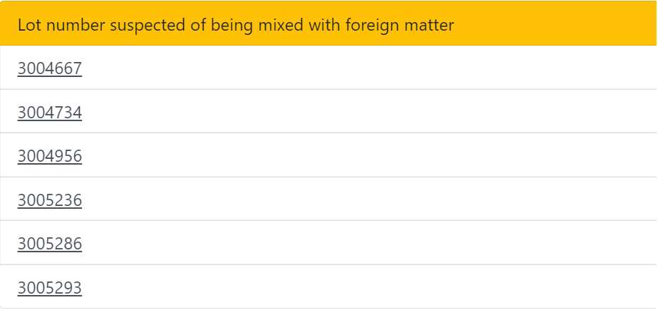
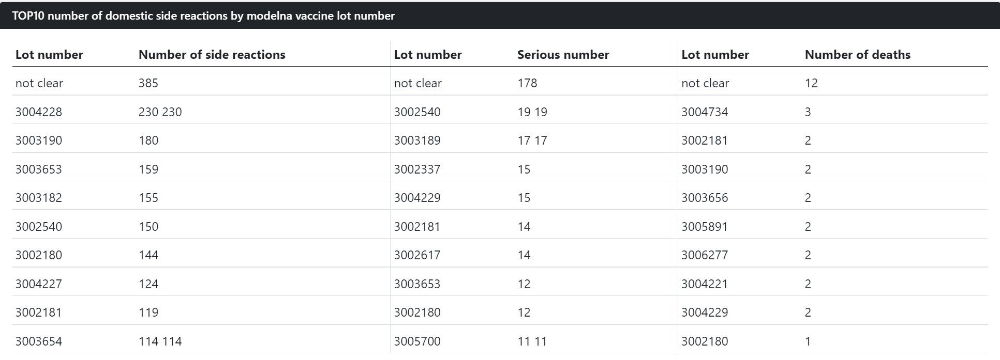
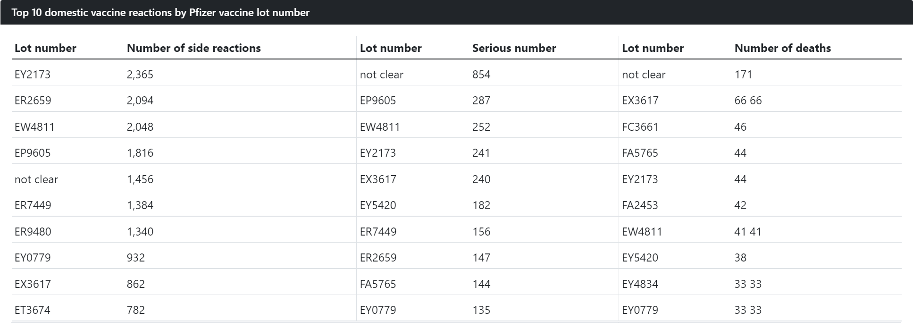
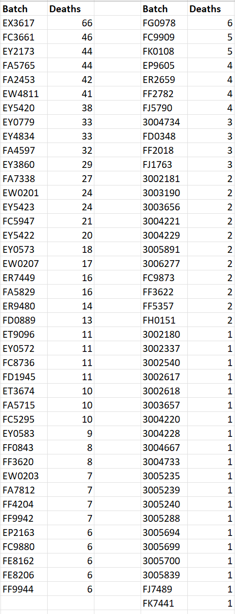

home | Booster Warnings by Month | Moderna | Pfizer | Janssen | Moderna (outside USA) | Pfizer (outside USA) | Janssen (outside USA) | Severe | Symptom | Treatment | Children | Clusters | All or Nothing | Time till onset | Gender | Geography | States | Causality | Japan | Sweden | Video Library | Case Reports | Lot Sizes | Lot Expiry Dates | Whistle Blowers | Data Cleaning | Background | Download Source Code | Donate
Recalls in Japan
On September 1st 2021, Japan suspended use of Covid 19 vaccines following discovery of adulteration of Moderna batches - (news article).Though this event received widespread news coverage, the identity of all of the contaminated batches remained secret. My colleagues, members of Team Enigma, made efforts to liase with the Japanese regulators in order to find out more information. They contacted the people they knew - but facts were not forth coming.
Then a few days ago I received information from a contact in Holland.
Here are the batch codes suspected of being contaminated
Moderna Lots

Further information was forth-coming for Moderna, regarding the extreme variation between batches - some batches producing twice the number of side reactions, severe reactions and deaths compared to others.

As you can see, these lot numbers belong to common mathematical series -
These were not isolated lots, or one-off accidents. They were part of mathematical series of batches - repeatedly distributed.
Pfizer Lots
High variation between Pfizer lots was also apparent - some lots producing 3 x the number of side reactions, 6 x the number of severe reactions, and 2 x the number of deaths

The EY series is particularly bad for causing death-
Deaths in Japan Following Vaccination
Data is available for 1084 deaths folllowing vaccination in Japan. A downloadable spreadsheet is available below. Deaths are classified by batch number. Some batches are producing 50 x the number of deaths compared to other batches

Sources